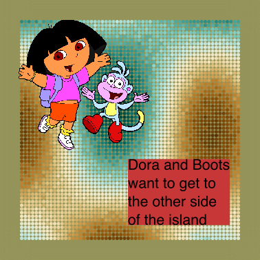
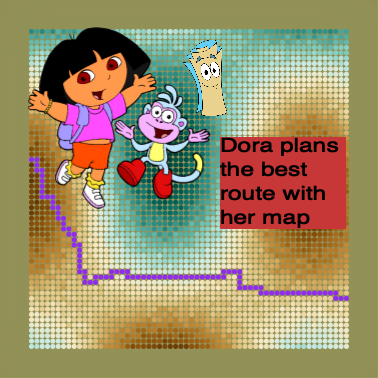
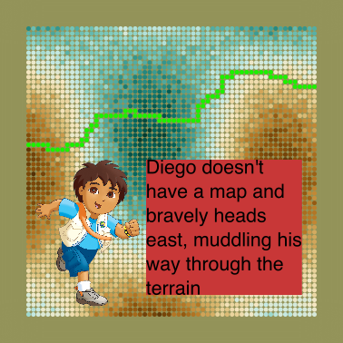
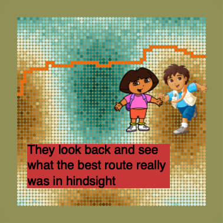
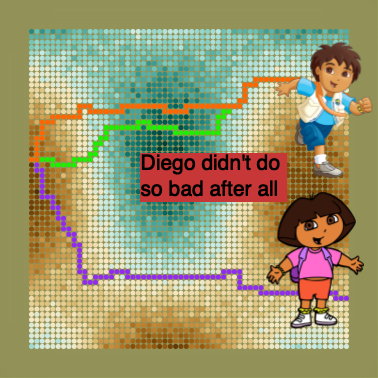

On not having a map

Dora the Exploradora and her monkey friend Boots are on a mission. They are on one side of a magical island and they need to get to the other.
She gets out her trusty map from her purple rucksack and sees that there are no roads or paths so she carefully plans the very best route she can with the information she has, avoiding the scary dark forest valley and skirting the rocky mountains. On the way they are met with unexpected obstacles: gullies, fallen trees and riddling trolls. Undeterred and with a little of our help, they finally get to their destination. We did it! We did it!

Some time later, Diego (and Baby Jaguar, presumably) are faced with the same challenge. Unfortunately it’s now really foggy. (“Niebla”, you say it!) Poor chap doesn’t have a map and only has a compass to guide him roughly in the right direction. Diego looks around and bravely heads along the easiest route he can see, roughly east, feeling his way across the island the best he can, avoiding only the obstacles he can see around him. He makes it to the other side.

Dora did great, she feels lucky she had her map! However, Diego made it too. They wonder how much having the map helped. Now that they’re across the island they look back at the route they took. With the benefit of hindsight they can see that perhaps the route she took based on the map wasn’t the best one and, in fact, it might have been better to go a different way.

It turns out that in this case Diego actually did better than Dora, even without the map. In fact he’s not far from the best route in hindsight.

By not sticking to a predefined plan he was able to navigate around those fallen trees and even some of those pesky trolls.
Is this true in general or just a fluke. Let’s try and find out.
So how much did the map help?
To answer this question I had an idea for a toy model to compare Dora’s and Diego’s adventures and did a bit of programming to try it out. The images above are actual screenshots. Here’s the setup.
The island is a grid. Getting from one point on the grid to an adjacent point has a difficulty representing the lie of the land (the difficulty of movement). This is calculated numerically as a cost function where the cost depends on the change in height1. This corresponds to the intuitive notion that steeper sections are more difficult to traverse than flat sections and any bumps on the ground make the going harder.
1 Mathematically, the cost function at between any two adjacent points \(c\) is calculated as \(c = 1+\delta h\) where \(\delta h\) is the change on height.
2 The use of the word “ruggedness” here is deliberate. We can draw on some sophisticated science to crystallise this idea and give it real-world meaning.
Then we consider two grids. One grid is set up like a map, an idealised representation of the contours of valleys and mountains and a few of the largest features. Another grid represents the actual terrain, with additional detail of smaller obstacles which are not marked on the map. The ruggedness2 of the terrain is applied randomly but its magnitude is parametrisable.
For different levels of ruggedness, I ran a shortest path finding algorithm 3 across the map (Dora’s planned route) and across the terrain using step sizes of varying lengths. Think about the size of these steps as corresponding to different amounts of fog for Diego: visibility is the second parameter. In every case calculating the total difficulty over the whole journey.
Since this is a numerical model we can get a feeling for what’s happening by studying how the model behaves as the parameters (ruggedness and visibility) change. I ran the model thousands of times to get a distribution of results for different parameter settings.
Diego vs Dora
First let’s see how Diego’s and Dora’s experience compares in general as the ruggedness of the terrain changes.

As you might guess, Dora did well when the map was highly accurate (the far left of the graph), but, unfortunately for her, any additional ruggedness of the terrain which was not marked on the map made her experience much more difficult than expected when following the route she planned in advance.
Diego on the other hand didn’t stick to a predefined route so sometimes was able to adapt to obstacles not on the map. As the ruggedness of the terrain increases past a certain point he consistently does better than Dora.
This is the first observation: there is a trade-off between following a plan and adapting as you go and it depends (at least) on the ruggedness of your terrain. There is a book in that statement4.
4 Just as a teaser, Simon Wardley talks at great length about how novelty generates uncertainty, leading to a rugged terrain while mature components can be planned more confidently. Bent Flyvbjerg has researched uniqueness bias and a tendency for us to believe that our situation is different from any other, overestimating the uncertainty. Or Chris Rodgers’ Wiggly
A second observation here, often overlooked, is predictability. This can be interpreted on the graph as the width of the ribbon. A narrow ribbon means low variability which corresponds to greater predictability. Again Dora’s progress is very predictable when the map matches reality but that predictability decreases rapidly as reality bites. Interestingly, Diego’s progress is much more predictable than Dora’s as the terrain becomes more and more unpredictable; the variability in his routes is, in fact, fairly constant.
More predictability means being able to have greater confidence in the final outcome. In many projects involving multiple external stakeholders this predictability is actually more important than the details of any plan itself. Read that again.
Third observation: Past a certain point of ruggedness, not only does Diego consistently do better than Dora, he also tends to pick a path close to the best route in hindsight. Let’s see this on a graph.

Intuition holds in the sense that the best route also gets more and more difficult (and variable) as the ruggedness of the actual terrain increases. Diego hardly ever finds perfection but, interestingly, his experience tracks surprisingly closely the best possible one. Again we can see that Diego’s strategy is more predictable than Dora’s as he can “think on his feet” and avoid any trouble encountered on the way.
So how much does Dora’s experience deviate from her best made plans?
The relationship between the plan and reality has become a cliché. As Field Marshal Helmuth von Moltke is said to have said:
“No plan of operations extends with any certainty beyond the first encounter with the main enemy forces.”
Can we see this in our little model? The answer is yes and very strikingly.

When the map perfectly matches the terrain then her experience is as expected but as the map fails to show the detail, the difficulty and variability of her experience increases enormously. Compare this to Diego’s experience compared to the very best route. Field Marshal Helmuth von Moltke was definitely right.
There is another maxim which is usually attributed to Eisenhower:
“Plans are worthless, but planning is everything.”
The strategies used by Dora and Diego are two extremes but they can be combined. We can plan and we can adapt too. What happens if we lift the fog on Diego to allow him to “look ahead” with greater visibility to the future.

If we give Diego predictive superpowers he gets closer and closer to the best possible route. Perfect prediction is equivalent to 20/20 hindsight.
If we believe Winston Churchill who said:
“…the best generals are those who arrive at the results of planning without being tied to plans.”
Then Diego would have made a pretty good general!
A model is just a model
Erica Thomson, in her book Escape from Model Land: How Mathematical Models Can Lead Us Astray and What We Can Do About It (2022) wrote:
“Models are not simple tools that we can take up, use and put down again. The process of generating a model changes the way that we think about a situation, encourages rationalisation and storytelling, strengthens some concepts and weakens others.”
This is a model with many implicit assumptions, for example, there are no existing paths or roads on the map. Assuming these were clear of obstacles then these would potentially give Dora a significant advantage. What roads would do in effect is to reduce uncertainty in the map, making her strategy more effective. Likewise dead ends like impassable cliffs or rivers are unlikely to be present.
Also there is some flexibility in the destination, it’s not a specific location. If it were then Diego would have a more difficult time finding it because he wouldn’t be able to “go roughly east”. There is some scope here for further study. Are there strategies that Diego could follow to get to a specific spot in a reliable way?
The model is set up in such a way that ruggedness and difficulty are directly related, in fact linearly related. This is visible as the slope of the line on the graph. Similarly the intercept of the line is the minimal difficultly of the map. On the other hand, there are no units on the axes. That’s because it’s not clear to me how those units would map to the real world anyway. By removing the units I’m saying that I don’t know5. I could attempt to build them in but then it would be a different model.
5 “It is better to be vaguely right than exactly wrong.” ― Carveth Read, Logic: Deductive and Inductive (1920)
In fact, where did the the parameters of ruggedness and visibility even come from? Well, they came from my intuition and I had to play around with the model to see if my intuition was valid or not. It turned out that it was but it doesn’t preclude other parametrisations and observations.
As it stand, it does do two things, however. Firstly, it reifies my intuition. It’s not just some fuzzy idea in my head, or me being persuaded by appeal to authority. It’s a numerical model that has built-in assumptions and a story to tell. You might have another.
Secondly, it uses data to demonstrate the results, not hand wavy suppositions. Assumptions in, observations of data out. Both ends require a certain leap of faith but at least it’s an honest, transparent and verifiable one. That’s one way to escape Model Land.
It took me a couple of full days to create this model and another couple to write up the results. My intuition is stronger now and I have a model which generates interpretable data. When someone says Alfred Korzybski’s phrase “the map is not the terrain” again, I will think back to this model. The next time someone asks me why we need a plan, I’ll have an honest answer.
Next draft:
Remove repetition of the “no axis” stuff.
Need a “So what?” section which explicitly interprets the model in terms of project management.
GPS?